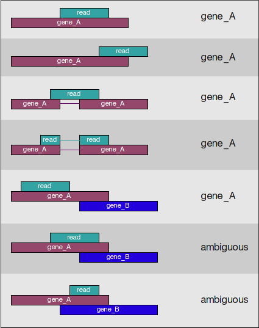

Approximate time: 90 minutes
Learning Objectives:
- Describe and implement the RNA-seq workflow to align reads to the reference genome
- Describe tools and methods within the RNA-seq workflow
- Assessing input and output filetypes
Setting up to run the RNA-seq workflow
To get started with this lesson, we will start an interactive session and ask for 6 cores, by adding -n 6 to the srun command:
$ srun --pty -p interactive -t 0-12:00 -n 6 --mem 8G --reservation=HSPH bash
Change directories into the unix_lesson directory and copy the reference_data folder into your project directory:
$ cd ~/rnaseq
You should have a directory tree setup similar to that shown below. It is best practice to have all files you intend on using for your workflow present within the same directory.
rnaseq/
├── raw_data/
├── reference_data/
└── chr1.fa
└── chr1-hg19_genes.gtf
├── meta/
├── results/
├── scripts/
└── logs/
Below is a general overview of the steps involved in RNA-seq analysis.

Read Alignment
The alignment process consists of choosing an appropriate reference genome to map our reads against, and performing the read alignment using one of several splice-aware alignment tools such as STAR or HISAT2 (HISAT2 is a successor to both HISAT and TopHat2). The choice of aligner is a personal preference and also dependent on the computational resources that are available to you. The splice-aware feature is especially important for RNA-seq data, because we want an alignment tool that considers splice junctions when performing alignments.
For this workshop we will be using STAR (Spliced Transcripts Alignment to a Reference), an aligner designed to specifically address many of the challenges of RNAseq read mapping. STAR is shown to have high accuracy and outperforms other aligners by more than a factor of 50 in mapping speed (but also requires quite a bit of memory).
STAR Alignment Strategy
The algorithm achieves this highly efficient mapping by performing a two-step process:
- Seed searching
- Clustering, stitching, and scoring
Seed searching
For every read that STAR aligns, STAR will search for the longest sequence that exactly matches the reference genome:

The different parts of the read that are mapped separately are called ‘seeds’. So the first MMP that is mapped to the genome is called seed1.
STAR will then search again for only the unmapped portion of the read to find the next longest sequence that exactly matches the reference genome, which will be seed2.

If STAR does not find an exact matching sequence for each part of the read due to mismatches or indels, the seed will be extended.

If extension does not give a good alignment, then the poor quality or adapter sequence (or other contaminating sequence) will be soft clipped.

This sequential searching of only the unmapped portions of reads underlies the efficiency of the STAR algorithm. STAR uses an uncompressed suffix array (SA) to efficiently search for the longest matching portions of the read, this allows for quick searching against even the largest reference genomes. Other slower aligners use algorithms that often search for the entire read sequence before splitting reads and performing iterative rounds of mapping. More details on the algorithm itself can be found in the STAR publication.
Clustering, stitching, and scoring
The separate seeds are stitched together to create a complete read by first clustering the seeds together based on proximity to a set of seeds that have good alignment scores and are not multi-mapping.
Then the seeds are stitched together based on the best alignment for the read (scoring based on mismatches, indels, gaps, etc.).

Setting up
Let’s get started by loading up the STAR module required for alignment:
$ module load star/2.5.2b
Create an output directory for our alignment files:
$ mkdir results/STAR
In the automation script, we will eventually loop over all of our files and have the cluster work on the files in parallel. For now, we’re going to work on just one to test and set up our workflow. To start we will use the first replicate in the Mov10 overexpression group, Mov10_oe_1_subset.fq.
Running STAR
Aligning reads using STAR is a two-step process:
- Create a genome index
- Map reads to the genome
Creating a genome index
The genome index is analagous to an index in a textbook, it is used to organize the genome in a way that can be easily accessed and makes for more efficient searching. For this workshop, we have already indexed the reference genome for you as this can take a while. We have provided the code below that you would use to index the genome for your future reference, but please do not run the code below. For indexing the reference genome, a reference genome (FASTA) is required and an annotation file (GTF or GFF3) is suggested a more accurate alignment of the reads.
The basic options to generate genome indices using STAR are as follows:
--runThreadN: number of threads--runMode: genomeGenerate mode--genomeDir: /path/to/store/genome_indices--genomeFastaFiles: /path/to/FASTA_file (reference genome)--sjdbGTFfile: /path/to/GTF_file (gene annotation)--sjdbOverhang: readlength -1
** DO NOT RUN**
STAR --runThreadN 6 --runMode genomeGenerate --genomeDir ./ --genomeFastaFiles chr1.fa --sjdbGTFfile chr1-hg19_genes.gtf --sjdbOverhang 99
NOTE: For human and other commonly used model organisms, the O2 cluster has a designated directory at
/n/groups/shared_databases/in which there are files that can be accessed by any user. These files contain, but are not limited to, genome indices for various tools, reference sequences, tool specific data, and data from public databases, such as NCBI and PDB. So when using a tool and requires a reference of sorts, it is worth taking a quick look here because chances are it’s already been taken care of for you.
$ ls -l /n/groups/shared_databases/igenome
For this workshop we are using reads that originate from a small subsection of chromosome 1 (~300,000 reads) and so we are using only chr1 as the reference genome. Therefore, we cannot use any of the ready-made indices available in the shared folder. The index we have created is located at /n/groups/hbctraining/intro_rnaseq_hpc/reference_STAR if you wanted to take a look at what files comprise a STAR index.
Mapping reads
The basic options for mapping reads to the genome using STAR are as follows:
--runThreadN: number of threads--readFilesIn: /path/to/FASTQ_file--genomeDir: /path/to/genome_indices--outFileNamePrefix: prefix for all output files
We will also be using some advanced options:
--outSAMtype BAM SortedByCoordinate: output filetype (SAM default)--outSAMUnmapped Within: what to do with unmapped reads
Note that default filtering is applied in which the maximum number of multiple alignments allowed for a read is set to 10. If a read exceeds this number there is no alignment output. To change the default you can use --outFilterMultimapNmax, but for this lesson we will leave it as default. The advanced parameters that we are going to use are described below:
More details on STAR and its functionality can be found in the user manual, we encourage you to peruse through to get familiar with all available options.
Now let’s put it all together! The full STAR alignment command is provided below.
If you like you can copy-paste it directly into your terminal. Alternatively, you can manually enter the command, but it is advisable to first type out the full command in a text editor (i.e. Sublime Text or Notepad++) on your local machine and then copy paste into the terminal. This will make it easier to catch typos and make appropriate changes.
$ STAR --runThreadN 6 \
--genomeDir /n/groups/hbctraining/intro_rnaseq_hpc/reference_STAR \
--readFilesIn raw_data/Mov10_oe_1.subset.fq \
--outFileNamePrefix results/STAR/Mov10_oe_1_ \
--outSAMtype BAM SortedByCoordinate \
--outSAMunmapped Within \
Exercise
- How many files do you see in your output directory?
- Using the
lesscommand take a look atMov10_oe_1_Log.final.outand answer the following questions:- How many reads are uniquely mapped?
- How many reads map to more than 10 locations on the genome?
- How many reads are unmapped due to read length?
Alignment Outputs (SAM/BAM)
The output we requested from STAR is a BAM file, and by default returns a file in SAM format. BAM is a binary version of the SAM file, also known as Sequence Alignment Map format. The SAM file is a tab-delimited text file that contains information for each individual read and its alignment to the genome. The file begins with an optional header (which starts with ‘@’), followed by an alignment section in which each line corresponds to alignment information for a single read. Each alignment line has 11 mandatory fields for essential mapping information and a variable number of fields for aligner specific information.
These fields are described briefly below, but for more detailed information the paper by Heng Li et al is a good start.


Let’s take a quick look at our alignment. To do so we first convert our BAM file into SAM format using samtools and then pipe it to the less command. This allows us to look at the contents without having to write it to file (since we don’t need a SAM file for downstream analyses).
$ module load gcc/6.2.0 samtools/1.3.1
$ samtools view -h results/STAR/Mov10_oe_1_Aligned.sortedByCoord.out.bam | less
NOTE: When loading the
samtoolsmodule we also needed to load thegccmodule. This is because on O2 there are some tools that need the compiler loaded before it can run. When in doubt trymodule spideron the tool you are interested in using.
Scroll through the SAM file and see how the fields correspond to what we expected.
Counting reads
Once we have our reads aligned to the genome, the next step is to count how many reads have been mapped to each gene. The input files required for counting include the BAM file and an associated gene annotation file in GTF format. htseq-count and featureCounts are two commonly used counting tools. Today, we will be using featureCounts to get the gene counts. We picked this tool because it is accurate, fast and is relatively easy to use.
featureCounts works by taking the alignment coordinates for each read and cross-referencing that to the coordinates for features described in the GTF. Most commonly a feature is considered to be a gene, which is the union of all exons (which is also a feature type) that make up that gene. Please note that this tool is best used for counting reads associated with genes, and not for splice isoforms or transcripts, we will be covering that later today.
featureCounts only includes and counts those reads that map to a single location (uniquely mapping) and follows the scheme in the figure below for assigning reads to a gene/exon.

featureCounts can also take into account whether your data are stranded or not. If strandedness is specified, then in addition to considering the genomic coordinates it will also take the strand into account for counting. If your data are stranded always specify it.
Setting up to run featureCounts
Let’s start by creating a directory for the output:
$ mkdir results/counts
featureCounts is not available as a module on O2, but we have already added the path for it to our $PATH variable last time.
$ which featureCounts # should return /n/app/bcbio/tools/bin/featureCounts
** If running the above command does not return
/n/app/bcbio/tools/bin/featureCounts, runexport PATH=/n/app/bcbio/tools/bin:$PATHand try thewhichcommand again.**
How do we use this tool, what is the command and what options/parameters are available to us?
$ featureCounts
So, it looks like the usage is featureCounts [options] -a <annotation_file> -o <output_file> input_file1 [input_file2] ... , where -a, -o and input files are required.
It can also take multiple bam files as input. Since we have only run STAR on 1 FASTQ file, let’s copy over the other bam files that we would need so we can generate the full count matrix.
cp /n/groups/hbctraining/intro_rnaseq_hpc/bam_STAR/*bam ~/rnaseq/results/STAR/
We are going to use the following options:
-T 4 # specify 4 cores-s 2 # these data are "reverse"ly stranded
and the following are the values for the required parameters:
-a ~/rnaseq/reference_data/chr1-hg19_genes.gtf # required option for specifying path to GTF-o ~/rnaseq/results/counts/Mov10_featurecounts.txt # required option for specifying path to, and name of the text output (count matrix)~/rnaseq/results/STAR/*bam # the list of all the bam files we want to collect count information for
Running featureCounts
$ featureCounts -T 4 -s 2 \
-a ~/rnaseq/reference_data/chr1-hg19_genes.gtf \
-o ~/rnaseq/results/counts/Mov10_featurecounts.txt \
~/rnaseq/results/STAR/*bam
featureCounts output
The output of this tool is 2 files, a count matrix and a summary file that tabulates how many the reads were “assigned” or counted and the reason they remained “unassigned”. Let’s take a look at the summary file:
$ less results/counts/Mov10_featurecounts.txt.summary
Now let’s look at the count matrix:
$ less results/counts/Mov10_featurecounts.txt
The count matrix that we need to perform differential gene expression analysis needs to look something like this:
Since the featureCounts output has additional columns with information about genomic coordinates, gene length etc., we can use the cut command to select only those columns that you are interested in.
$ cut -f1,7,8,9,10,11,12 results/counts/Mov10_featurecounts.txt > results/counts/Mov10_featurecounts.Rmatrix.txt
less results/counts/Mov10_featurecounts.Rmatrix.txt
To ready this text file (count matrix) for the next step of differential gene expression analysis, you will need to clean it up further by removing the first header line, and modifying the column names (headers) to simpler, smaller sampleIDs. We can do this using a GUI text editor on our local laptops, or we can try using some of the shortcuts available in vim!
$ vim results/counts/Mov10_featurecounts.Rmatrix.txt
Vim has nice shortcuts for cleaning up the header of our file using the following steps:
- Move the cursor to the beginning of the document by typing:
gg(in command mode). - Remove the first line by typing:
dd(in command mode). - Remove the file name following the sample name by typing:
:%s/_Aligned.sortedByCoord.out.bam//g(in command mode). -
Remove the path leading up to the file name by typing:
:%s/\/home\/rc_training10\/unix_lesson\/rnaseq\/results\/STAR\///g(in command mode).Note that we have a
\preceding each/, which tells vim that we are not using the/as part of our search and replace command, but instead the/is part of the pattern that we are replacing. This is called escaping the/.
NOTE: The home directory will need to be changed to either your eCommons ID or the training account you are using.
Note on counting PE data
For paired-end (PE) data, the bam file contains information about whether both read1 and read2 mapped and if they were at roughly the correct distance from each other, that is to say if they were “properly” paired. For most counting tools, only properly paired reads are considered by default, and each read pair is counted only once as a single “fragment”.
For counting PE fragments associated with genes, the input bam files need to be sorted by read name (i.e. alignment information about both read pairs in adjoining rows). The alignment tool might sort them for you, but watch out for how the sorting was done. If they are sorted by coordinates (like with STAR), you will need to use
samtools sortto re-sort them by read name before using as input in featureCounts. If you do not sort you BAM file by read name before using as input, featureCounts assumes that almost all the reads are not properly paired.
Next Steps: Performing DE analysis on the count matrix
This text file with a matrix of raw counts can be used as input to tools like DESeq2, EdgeR and limma-voom. Running the DE analysis tools are outside the scope of this workshop since they require a working knowledge of R. We do have additional materials that you can go through for performing these analyses using the MOV10 dataset, and we might walk through them if time permits today.
Visual assessment of the alignment
Index the BAM file for visualization with IGV:
$ samtools index results/STAR/Mov10_oe_1_Aligned.sortedByCoord.out.bam
Use FileZilla to copy the following files to your local machine:
~/unix_lesson/results/STAR/Mov10_oe_1_Aligned.sortedByCoord.out.bam
~/unix_lesson/results/STAR/Mov10_oe_1_Aligned.sortedByCoord.out.bam.bai
NOTE: You can also transfer files to your laptop using the command line
Similar to the
cpcommand, there is a command that allows you to securely copy files between computers. The command is calledscpand allows files to be copied to, from, or between different hosts. It uses ssh for data transfer and provides the same authentication and same level of security asssh.First, identify the location of the origin file you intend to copy, followed by the destination of that file. Since the original file is located on O2, this requires you to provide remote host and login information.
$ scp user_name@transfer.rc.hms.harvard.edu:/home/user_name/unix_lesson/rnaseq/results/STAR/Mov10_oe_1_Aligned.sortedByCoord.out.bam* /path/to/directory_on_laptop
Visualize
- Start IGV, you should have this previously installed on your laptop.
- Load the Human genome (hg19) into IGV using the dropdown menu at the top left of your screen. Note: there is also an option to “Load Genomes from File…” under the “Genomes” pull-down menu - this is useful when working with non-model organisms
- Load the .bam file using the “Load from File…“ option under the “File” pull-down menu. IGV requires the
.baifile to be in the same location as corresponding.bamfile that you want to load into IGV, but there is no other direct use for this index file.

Exercise
Now that we have done this for one sample, let’s try using the same commands to perform alignment on one of the control samples. Create an index for the Irrel_kd_1_Aligned.sortedByCoord.out.bam file and them to your laptop and load into IGV for visualization.
- How does the MOV10 gene look in the control sample in comparison to the overexpression sample?
- Take a look at a few other genes by typing into the search bar. For example, PPM1J and PTPN22. How do these genes compare?
This lesson has been developed by members of the teaching team at the Harvard Chan Bioinformatics Core (HBC). These are open access materials distributed under the terms of the Creative Commons Attribution license (CC BY 4.0), which permits unrestricted use, distribution, and reproduction in any medium, provided the original author and source are credited.
- The materials used in this lesson were derived from work that is Copyright © Data Carpentry (http://datacarpentry.org/). All Data Carpentry instructional material is made available under the Creative Commons Attribution license (CC BY 4.0).